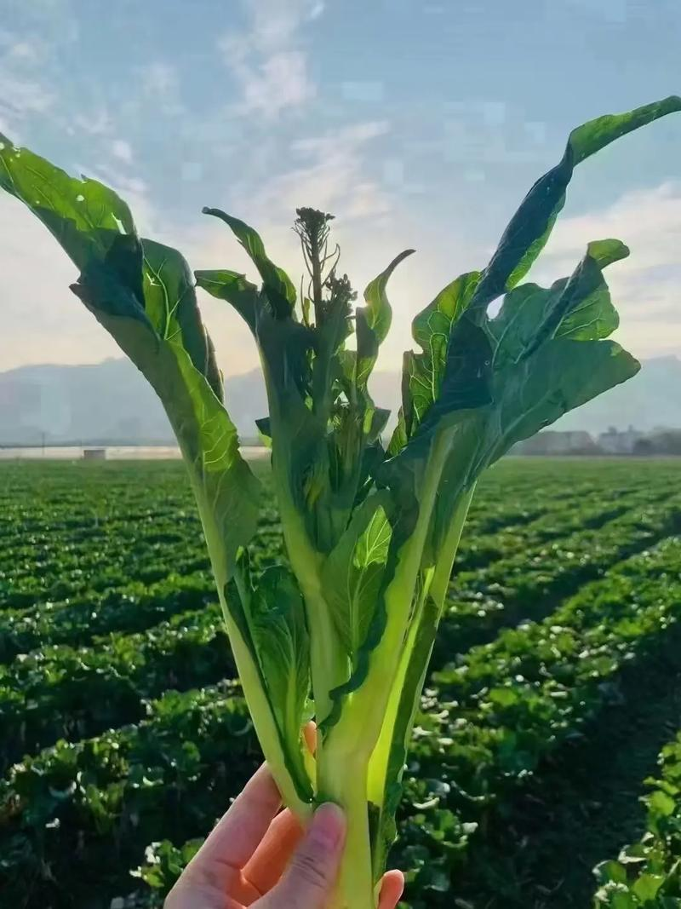
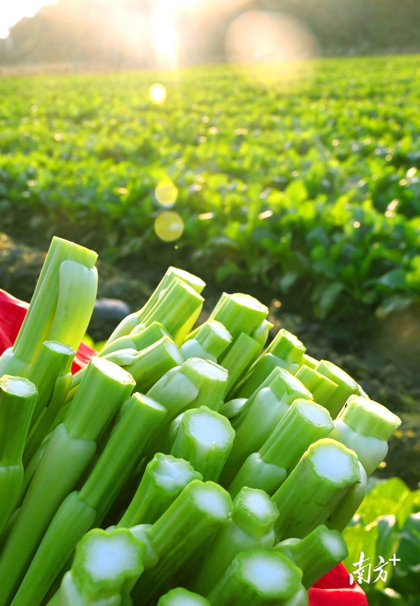
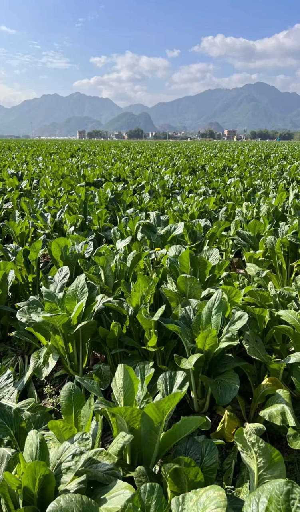
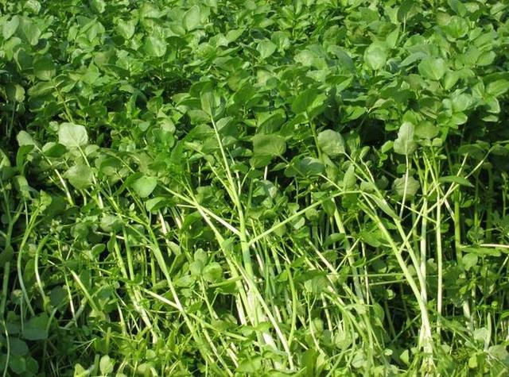
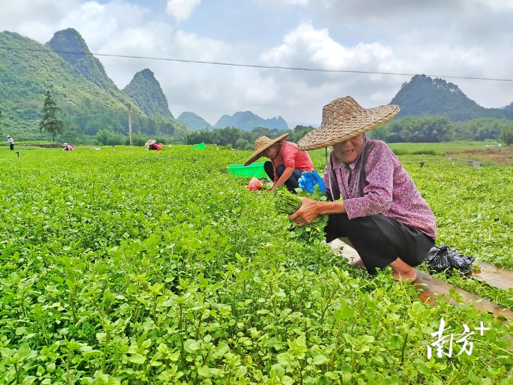
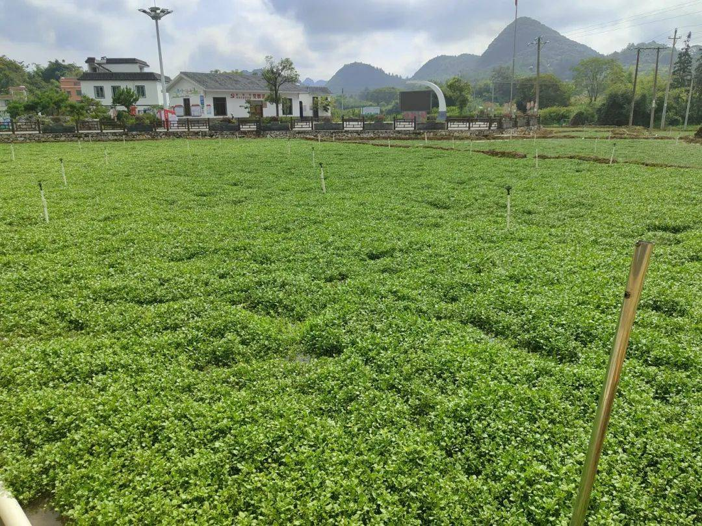
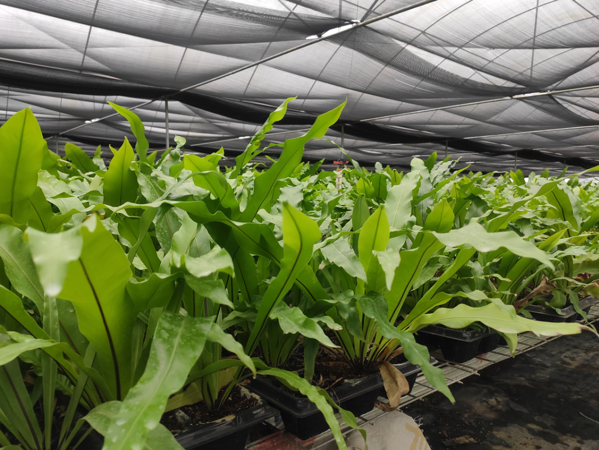
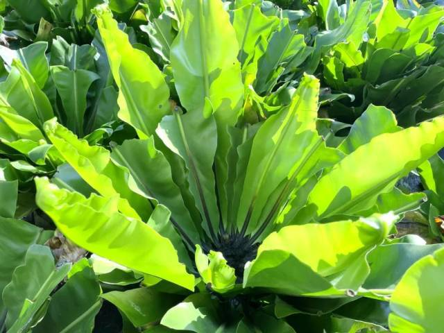

西洋菜原产欧洲，因其羽状复叶的小叶片形似豆瓣而得名。阳山县的西洋菜尤为著名，全年可“连种连收”，且色泽青绿、质地脆嫩、清香爽口。阳山西洋菜已获得国家地理标志产品认证，并带动了当地村民就业增收。
连州菜心是清远市的特色农产品，以其清甜、爽脆的口感著称。连州菜心市场反响热烈，价格保持在5元/斤以上，带动了近6万农民就业。2023年连州菜心的种植面积达17.3万亩，综合产值18.12亿元，预计2024年种植面积将超20万亩。
山苏是一种珍稀野菜，正式名称为台湾山苏花，形似迷你芭蕉叶。山苏在清远龙颈镇的茂密山林间种植，市场价格高达40元一斤。其独特的生长方式和顽强的生命力使其成为当地农户的重要经济来源

连州菜心

阳山西洋菜

清远龙颈镇山苏
此外，广东清远地区还有多种有机蔬菜种类，包括苋菜、韭菜、南瓜、冬瓜、西葫芦、红薯、西红柿和胡萝卜等。这些蔬菜在广东清远一年四季都可以种植和收获，确保了当地居民和游客一年四季都能享受到新鲜的有机蔬菜1
此外，清远地区的有机蔬菜种植得益于其优越的自然条件。清远位于广东省北部，拥有丰富的自然资源和良好的生态环境，这为有机蔬菜的生长提供了有利的条件。当地农民采用科学的种植方法，确保蔬菜在无污染的环境中生长，从而保证了蔬菜的有机性和高品质